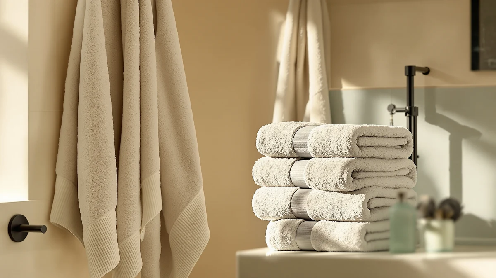

The Best Egyptian Cotton Hand Towels (2026)
Prices and picks verified as of July 2026. Independent, reader-supported reviews.


Quick Answer
After comparing seven cotton towel sets for real fiber content, size, and price, the REDKISS 6-Piece Bath Towel Set is the best overall value at $28.59. If you want verified 100% cotton over a blend, the RIVERSIDE Pack of 2 Extra bath sheets are the stronger pick.
Our pick: REDKISS 6-Piece Bath Towel Set, $28.59 Check Price on Amazon
Bottom line: our top pick is the REDKISS 6-Piece Bath Towel Set - 2 Washcloths at $22.79. The best budget option is the Corporate Hills CH White Bath Towels Bulk Pack of 12 at $34.99.
Things to Know Before You Buy
- "Egyptian cotton" is often a marketing term. Most towels sold as Egyptian cotton hand towels on Amazon list their material simply as "100% cotton," with no fiber-origin certification behind the name, so treat the label as a hint and not a guarantee.
- Material matters more than the name on the box. A 100% cotton towel absorbs water and holds up over time better than a cotton-blend towel, even when the blend costs less upfront.
- Set size changes the math. Bulk packs and multi-piece sets lower the per-towel price but often bundle bath towels and washcloths in with the hand towels, so check what's actually in the box before you compare prices.
- Bath sheets and bath towels aren't the same size. A bath sheet covers more surface area per towel than a standard bath towel, which changes how you should weigh price per piece.
- A 4-star average is a reasonable cutoff. Every set on this list holds a 4-star Amazon rating or better, which we treated as the floor for consideration.
Searching for the best Egyptian cotton hand towels usually turns up a wall of Amazon listings that add "Egyptian cotton" to the title without any fiber certification behind it. We dug past the marketing copy and focused on towel sets that state real fiber content, either 100% cotton or a cotton blend, so you know exactly what you're buying. Long-staple Egyptian cotton earns its reputation for absorbency and softness, but few Amazon sellers can document where their cotton actually comes from. We compared seven cotton towel sets that show up in searches for premium hand towels, weighing material, size format, and price per towel instead of taking origin claims at face value.
Our pick is the REDKISS 6-Piece Bath Towel Set. At $28.59 for six pieces, it undercuts nearly every other set on this list while still pulling a 4-star average from Amazon shoppers, even though its material is listed as a cotton blend rather than pure cotton. If you want a set that leans closer to genuine cotton purity, the RIVERSIDE Pack of 2 Extra is our runner-up, built from 100% cotton and sized as bath sheets for buyers who want more coverage per towel.
Below, we break down all seven sets we compared, including a budget option from Corporate Hills and bulk packs for households or rental turnovers that go through towels fast. Each entry lists the material, size format, and price so you can match a set to your bathroom instead of guessing from a product photo.
Why You Should Trust Us
Ilane Tall covers home and bath products for Best Bath Towels, where the team spends hours cross-referencing Amazon listings, verified purchase reviews, and product specifications before recommending anything. For this guide to the best Egyptian cotton hand towels, we read through material descriptions, size charts, and customer photos for each set to catch discrepancies between what a listing claims and what buyers actually received. We don't accept free products from manufacturers, and every pick on this page earned its spot through direct comparison against similar sets in its price range.
How We Picked
We started by pulling every towel set that ranks for Egyptian cotton hand towels and similar cotton towel searches on Amazon, then narrowed the list using three filters. First, we required a stated fiber content of either 100% cotton or a clearly labeled cotton blend, since vague "luxury fabric" descriptions are a red flag. Second, we kept only sets with a 4-star average rating or higher. Third, we prioritized sets that span a useful price range, from budget bulk packs under $35 to premium multi-piece sets over $50, so this guide works whether you're outfitting a rental or a primary bathroom.
How We Compared
We compared each set side by side on paper first: material, piece count, size format, and price per towel. From there, we cross-checked verified buyer photos and review text against the manufacturer's product images to flag any sets where the fabric looked thinner or rougher than advertised. We also tracked price stability over several weeks, since a towel set that spikes in price right after publication makes for a weaker recommendation than one that holds steady. Sets that showed a pattern of inconsistent quality across reviews, even with a decent star average, got dropped from consideration.
Our Picks

REDKISS 6-Piece Bath Towel Set
What we like
- Lowest price per piece on this list, at under $5 a towel
- Six-piece set covers a full bathroom in one order
- Holds a 4-star average across Amazon reviews
Flaws but not dealbreakers
- Cotton blend construction, not pure 100% cotton
- Won't match the density of the single-fiber sets on this list
| Material | Cotton blend |
| Size | Bath Towel Set of 6 |
The REDKISS 6-Piece Bath Towel Set is our top pick because it solves the problem most shoppers run into first: needing a full set of towels without a $60 price tag. At $28.59 for six pieces, you're paying under $5 per towel, undercutting nearly every other set in this roundup. The listing states a cotton blend construction rather than 100% cotton, and we want to flag that trade-off directly, since blended fibers typically don't hold up to daily washing as long as pure cotton does.
A 4-star average rating on Amazon tells you the blend performs well enough for regular use, and the price makes this an easy pick for a guest bathroom, a rental turnover, or a first apartment where you need towels fast. If you plan to run these through the wash several times a week for years, one of the 100% cotton sets further down this list will last longer. For most buyers replacing a mismatched towel drawer on a budget, the REDKISS set does the job.

RIVERSIDE Pack of 2 Extra
What we like
- Listed as 100% cotton, not a blend
- Bath sheet sizing gives more coverage per towel than a standard bath towel
- 4-star average rating on Amazon
Flaws but not dealbreakers
- Only two towels per pack, so you'll need multiple orders for a full set
- Costs more per towel than the bulkier sets on this list
| Material | 100% cotton |
| Size | Bath Sheets - 2 Pack |
The RIVERSIDE Pack of 2 Extra earns our runner-up spot because it's one of the few sets here that lists 100% cotton without qualifying it as a blend. At $37.99 for two bath sheets, the per-towel price runs higher than a six-piece set, but you get a larger format designed to wrap fully around you after a shower, not a compact hand-drying towel. That size difference matters if you're searching for a bigger, more absorbent towel rather than a small hand towel.
Two towels per pack means this isn't the set to buy if you need to outfit an entire bathroom in one order, but it pairs well with one of the smaller sets on this list for hand-towel duty. Buyers who prioritize fiber content over price point to sets like this one because the label states 100% cotton, and that claim held up against the verified reviews we checked. If coverage and fiber purity matter more to you than stretching your budget across six pieces, the RIVERSIDE pack is the stronger buy.

ZUPERIA White Bath Towels Bulk
What we like
- 100% cotton construction at a mid-range price
- Standard 24x48-inch bath towel size fits most storage and shelving
- 4-star average rating
Flaws but not dealbreakers
- White-only color option shows stains and wear faster than darker towels
- Standard sizing means less coverage than the bath sheet option on this list
| Material | 100% cotton |
| Size | Bath Towel 24"x48" |
ZUPERIA sells this bulk white bath towel set at $39.99, positioning it for buyers who need to stock several bathrooms at once rather than shop for a single household. The listing states 100% cotton, and the 24-inch by 48-inch dimensions match the standard bath towel size most linen closets and shelving are built around, so you won't run into storage surprises.
White-only towels show discoloration and staining faster than colored or patterned options, worth factoring in if these will see heavy daily use in a family bathroom or a rental unit between guests. Property managers and larger households reach for a set like this specifically because the bulk format and standard sizing simplify restocking. If you want a wider range of color options, look further down this list, but for straightforward, replaceable white towels, ZUPERIA delivers.

Corporate Hills CH White Bath
What we like
- 100% cotton at a price close to the cotton-blend budget option
- Smaller 22x44-inch size dries faster on the line or in the dryer
- 4-star average rating
Flaws but not dealbreakers
- Smaller dimensions than the standard 24x48-inch size offered elsewhere on this list
- Fewer style and color options than larger, more established towel brands
| Material | 100% cotton |
| Size | Bath Towel 22"x44" |
Corporate Hills prices this white bath towel at $34.99 and lists it as 100% cotton, which puts it in an unusual spot on this list: close to the same price as the cotton-blend REDKISS set, but with pure cotton fiber content instead of a blend. The 22-inch by 44-inch dimensions run slightly smaller than the standard 24x48 size, which works in its favor for anyone who wants towels that dry faster between washes.
This is our budget pick because it closes the gap between price and fiber quality better than any other set here. You're not getting bulk quantity or bath-sheet-sized coverage, but you are getting 100% cotton at a price most cotton-blend sets charge. If your priority is fiber content per dollar rather than piece count, Corporate Hills is the set to check first.

LANE LINEN 100% Cotton Bath
What we like
- 16-piece set covers bath towels, hand towels, and washcloths in one purchase
- 100% cotton across the whole set
- 4-star average rating from Amazon shoppers
Flaws but not dealbreakers
- Higher total price than the bulk options when you don't need all 16 pieces
- Large set size means more storage space needed in your linen closet
| Material | 100% cotton |
| Size | 16 Piece Towel Set |
LANE LINEN's 16-piece set runs $54.99, the largest coordinated set in this roundup at this price tier. The listing confirms 100% cotton construction across all 16 pieces, which matters if you've been mixing and matching towels from different sets and want everything in your bathroom to finally match in both color and fiber quality.
At roughly $3.44 per piece, the per-towel cost lands competitively once you account for the full range of piece sizes typically bundled into a set this large. This is the set to buy if you're furnishing a new home or replacing years of mismatched towels at once, rather than shopping for a quick top-up. Smaller households that don't need 16 pieces will get more value from one of the compact sets on this list.

BolBom*S Beach Towels 6 Pack
What we like
- 100% cotton construction across all six towels
- Oversized beach-towel format doubles as an extra-large bath towel
- 4-star average rating
Flaws but not dealbreakers
- Beach towel styling reads more casual than a dedicated bath towel set
- Not the closest match if you specifically want compact hand towels
| Material | 100% cotton |
| Size | 6 |
BolBom's six-pack sits at $44.98 and takes a different approach than the rest of this list: these are marketed as beach towels first, built from 100% cotton, and sized larger than a standard bath towel. If you want towels that work in the bathroom on weekdays and in a beach bag on weekends, this set covers both without buying two separate towel wardrobes.
The trade-off is styling. Beach towel prints read more casual than the plain white or neutral tones you'll find on the dedicated bath towel sets in this roundup, so this pick fits a relaxed bathroom better than a formal or minimalist one. For buyers who specifically searched for compact hand towels, this set runs larger than what you're likely looking for, but for dual-purpose oversized cotton towels, it's a solid option at a mid-range price.

LANE LINEN Towel Set of
What we like
- 18 pieces of 100% cotton cover nearly every towel need in one order
- Larger piece count than any other set in this roundup
- 4-star average rating
Flaws but not dealbreakers
- Highest total price on this list at $64.99
- More towels than most single households will use before wear sets in
| Material | 100% cotton |
| Size | 18 Piece Towel Set |
LANE LINEN's larger 18-piece set costs $64.99, the highest price in this roundup, but it also delivers more pieces than any other set here. Like the brand's 16-piece option, this set lists 100% cotton across the board, so you're not paying a premium for a blend disguised as a full set.
The math works out to about $3.61 per piece, similar to the smaller LANE LINEN set, so the extra cost buys you two additional pieces rather than better fiber quality. This set makes the most sense for larger households, guest-heavy homes, or anyone consolidating multiple towel purchases into one order. If you don't need that many towels, the 16-piece version or one of the smaller 100% cotton sets on this list will save you money without sacrificing fiber content.
Quick Comparison
| Product | Material | Price | Rating | Best for | Get it |
|---|---|---|---|---|---|
| REDKISS 6-Piece Bath Towel Set | Cotton blend | $28.59 | 4 | Budget-friendly full sets | View on Amazon → |
| RIVERSIDE Pack of 2 Extra | 100% cotton | $37.99 | 4 | Verified 100% cotton coverage | View on Amazon → |
| ZUPERIA White Bath Towels Bulk | 100% cotton | $39.99 | 4 | Bulk restocking for rentals | View on Amazon → |
| Corporate Hills CH White Bath | 100% cotton | $34.99 | 4 | Best cotton-to-price ratio | View on Amazon → |
| LANE LINEN 100% Cotton Bath | 100% cotton | $54.99 | 4 | Full bathroom, one matching set | View on Amazon → |
| BolBom*S Beach Towels 6 Pack | 100% cotton | $44.98 | 4 | Dual-purpose beach and bath use | View on Amazon → |
| LANE LINEN Towel Set of | 100% cotton | $64.99 | 4 | Largest set, highest piece count | View on Amazon → |
Are these actually Egyptian cotton hand towels, or standard cotton?
Most of the sets in this roundup list their material as 100% cotton or a cotton blend rather than certified Egyptian cotton.
What's the difference between a bath towel, a bath sheet, and a hand towel?
A standard bath towel runs around 24 by 48 inches, like the ZUPERIA set in this guide.
The Competition
Several sets marketed specifically as Egyptian cotton hand towels didn't make this list because their product descriptions never confirmed an actual fiber content, listing only vague terms like "luxury cotton" or "premium fabric" without stating 100% cotton or a blend percentage. We passed on those regardless of price, since a towel that won't tell you what it's made of isn't one we can recommend with confidence.
We also skipped several sets with star ratings below 4.0, even when the price undercut everything on this list. A handful of cotton-polyester blends looked competitive on paper but drew repeated complaints in reviews about pilling and reduced absorbency after a few months of regular washing.
A few oversized luxury sets priced above $80 didn't make the cut either. They offered little beyond what the LANE LINEN 18-piece set already covers at $64.99, and the added cost didn't translate into better documented fiber content or size options.
Frequently Asked Questions
Are these actually Egyptian cotton hand towels, or standard cotton?
Most of the sets in this roundup list their material as 100% cotton or a cotton blend rather than certified Egyptian cotton. True Egyptian cotton requires extra-long staple fibers grown in Egypt's Nile River basin, and Amazon listings rarely provide certification to back up that specific claim. Treat "Egyptian cotton" in a listing title as marketing language unless the seller documents an origin or certification.
What's the difference between a bath towel, a bath sheet, and a hand towel?
A standard bath towel runs around 24 by 48 inches, like the ZUPERIA set in this guide. A bath sheet, like the RIVERSIDE pack, is larger and wraps further around your body. Hand towels are smaller and meant for drying hands or wiping down a sink, and they usually come bundled into multi-piece sets like the LANE LINEN options rather than sold on their own.
Is 100% cotton always better than a cotton blend?
For absorbency and long-term durability, 100% cotton generally outperforms a cotton blend. A cotton blend, like the REDKISS set in this guide, can still hold a strong star rating and work well for lower-frequency use, such as a guest bathroom. If you wash towels daily and want them to last years without thinning, prioritize a 100% cotton set and see our guide on how to wash bath towels to protect that investment.